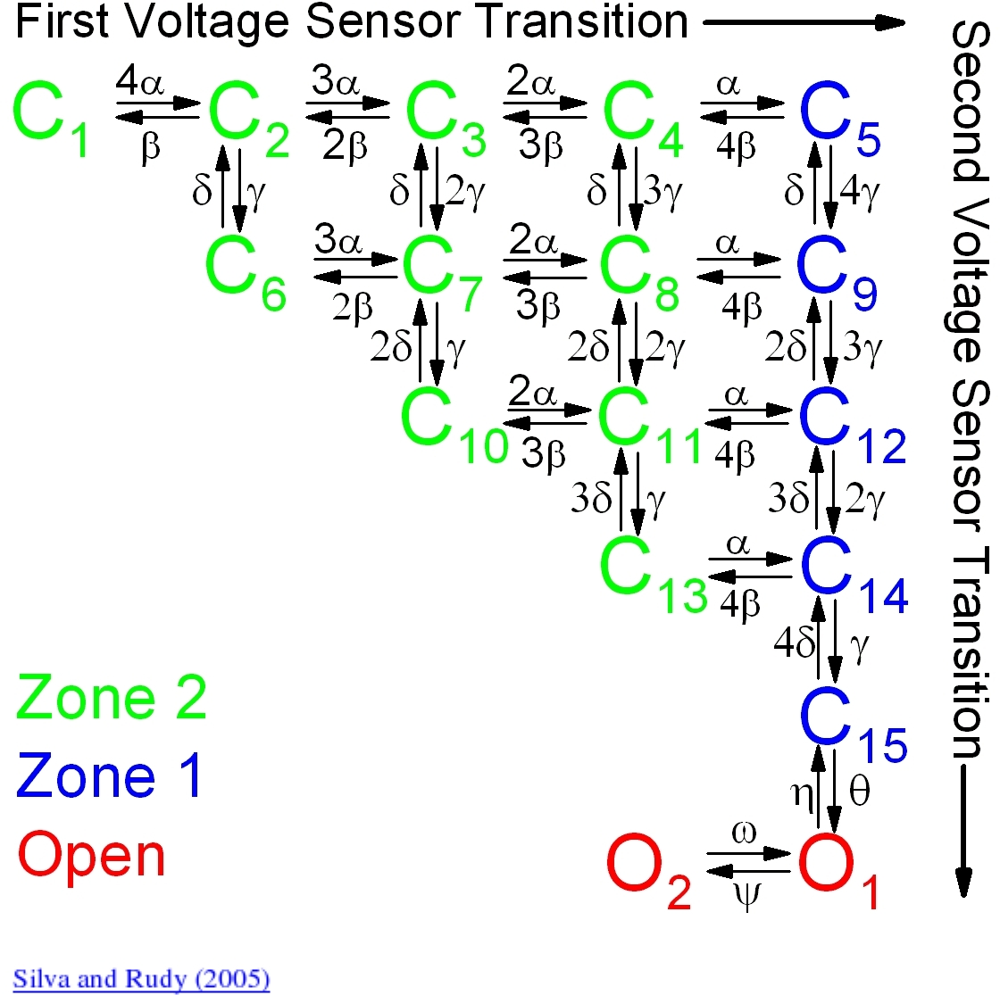
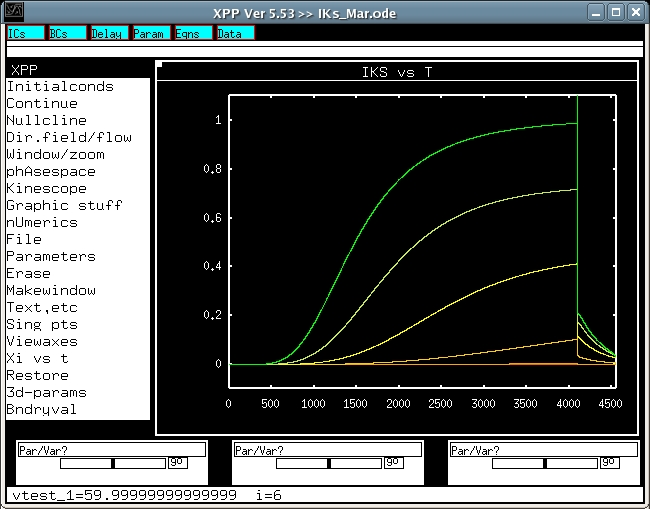

<pre>
This is the readme.txt for the models associated with the paper

Silva J, Rudy Y. Subunit interaction determines IKs participation
 in cardiac repolarization and repolarization reserve. 
Circulation 2005;112:1384-91.
The results reproduce Figure 3C in the paper.

Abstract:
BACKGROUND: The role of IKs, the slow delayed rectifier K+ 
current, in cardiac ventricular repolarization has been a subject 
of debate. METHODS AND RESULTS: We develop a detailed Markov 
model of IKs and its alpha-subunit KCNQ1 and examine their 
kinetic properties during the cardiac ventricular action 
potential at different rates. We observe that interaction 
between KCNQ1 and KCNE1 (the beta-subunit) confers kinetic 
properties on IKs that make it suitable for participation in 
action potential repolarization and its adaptation to rate 
changes; in particular, the channel develops an available reserve
of closed states near the open state that can open rapidly on 
demand. CONCLUSIONS: Because of its ability to form an available 
reserve, IKs can function as a repolarization reserve when IKr, 
the rapid delayed rectifier, is reduced by disease or drug and 
can prevent excessive action potential prolongation and 
development of arrhythmogenic early afterdepolarizations.

-----------------------------------------
These kinetic parameters are shown in Data supplement of 
the paper:



To run the models:
XPP: start with the command

xpp ode\IKs_Mar.ode

To make a trace similar to one in fig 3C of the paper:
Mouse click on Initialconds, and then (G)o.

To run the full family of voltage-clamp traces, 
click Range over, change the value to vtest_1.
Similarly set Steps:10, Start:-50, End:60, Reset Storage:N,
Cycle color:y, and click Ok.

This produces a graph like:



To run deactivation protocol, please change the value to vtest_2.
and then select a voltage protocol from Steps, Start and End.

Regarding xpp program, please contact with 
Bard Ermentrout's website http://www.pitt.edu/~phase/, which 
describes how to get and use xpp.

The model files were submitted by:

Dr. Sheng-Nan Wu, Han-Dong Chang, Jiun-Shian Wu
Department of  Physiology
National Cheng Kung University Medical College
Tainan 70101, Taiwan
snwu@mail.ncku.edu.tw
